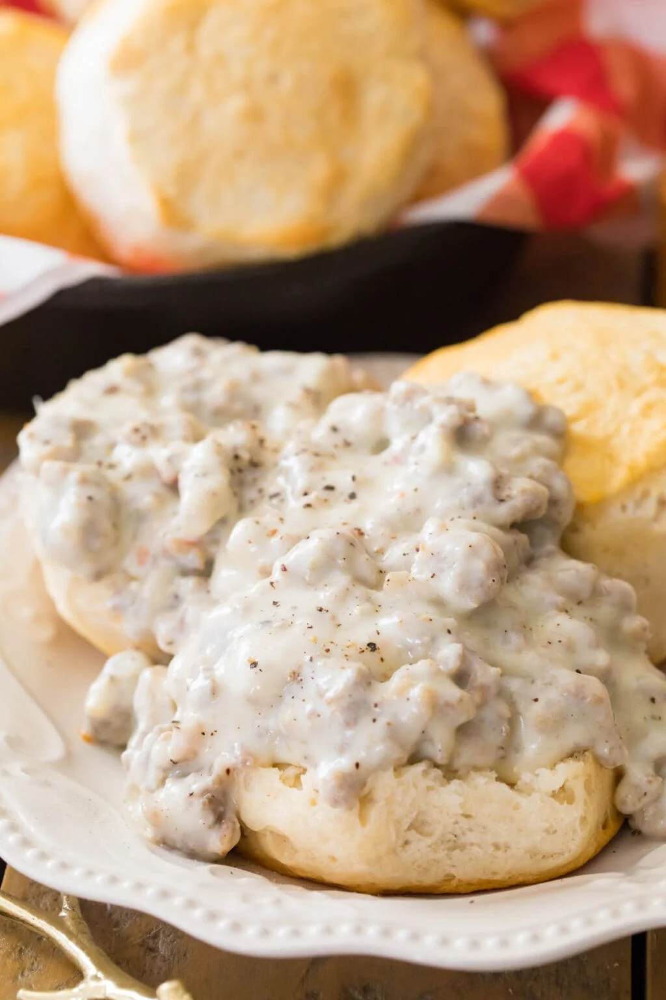

Biscuits and Gravy

Description
Fast and easy method of cooking the BEST biscuits and gravy. Only takes 5 mins of prep-time and 10 mins to cook.
Ingredients
- 1 (16 ounce) can refrigerated jumbo buttermilk biscuits
- 1 (9.6 ounce) package Jimmy Dean® Original Hearty Pork Sausage Crumbles
- ¼ cup flour
- 2 ½ cups milk
- salt and freshly ground black pepper to taste
Directions
- Preheat the oven to 350 degrees F (175 degrees C). Arrange biscuits 1 to 2 inches apart on an ungreased cookie sheet. Bake in the preheated oven until golden brown, about 13 to 15 minutes.
- Meanwhile, cook sausage in a large skillet over medium heat until thoroughly heated, stirring frequently, about 5 to 6 minutes.
- Stir in flour until well combined. Gradually add milk, stirring continuously, until the gravy thickens and comes to a boil. Reduce heat to medium-low; simmer and stir for 2 more minutes. Season to taste with salt and pepper.
- Split biscuits in half. Place 2 halves on each of 8 plates; top with about 1/3 cup gravy.